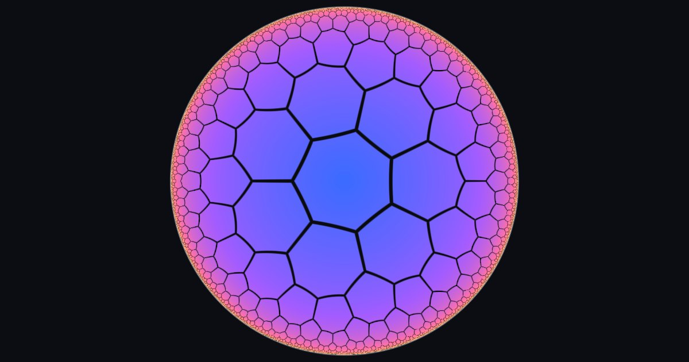

Math Explorer · Tilings
Tilings: hyperbolic tilings, wallpaper groups, Penrose tiles and the hat
Patterns that cover a surface with no gaps: on a sphere, on the flat plane, and on the endless hyperbolic plane.

Seven triangles can't meet at a corner on a flat floor, but on the hyperbolic plane they can, and the tiling goes on forever, squeezed into a disc in this view. Math Explorer draws every regular and uniform tiling on the sphere, the plane and the hyperbolic plane by Wythoff's mirror construction, and lets you glide across them.
There are all 17 wallpaper groups (every way a pattern can repeat on a wall), Truchet tiles, the never-repeating Penrose tilings and quasicrystals, and the hat: the single tile, found in 2023, that covers the plane but never in a repeating pattern.
Things to try
- Glide across the hyperbolic plane with seven triangles at every corner
- Step through the 17 wallpaper groups
- Grow a Penrose tiling and look for its fivefold symmetry
- See the hat monotile, which never repeats
- Make a random Truchet pattern